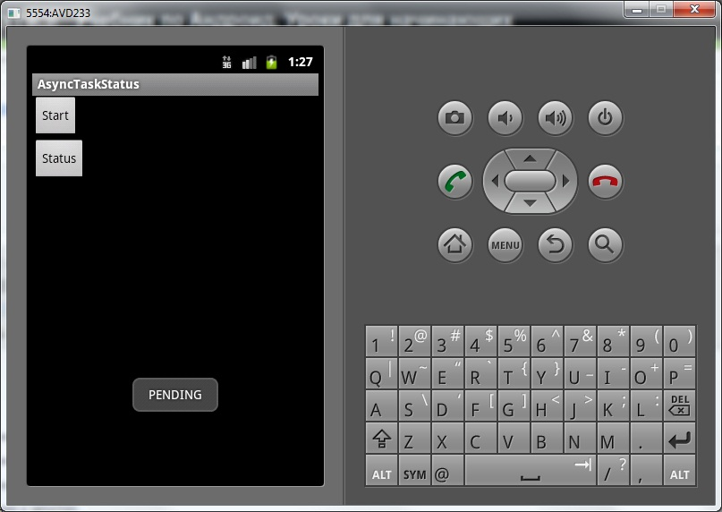
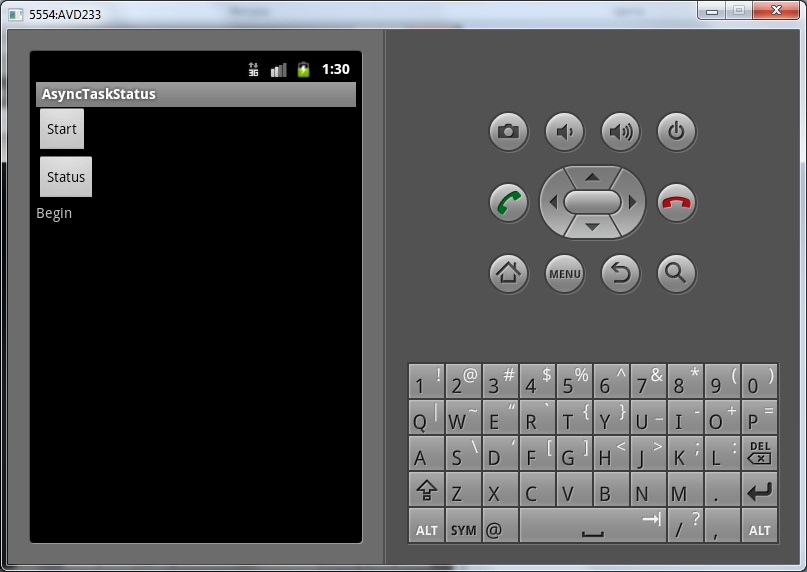
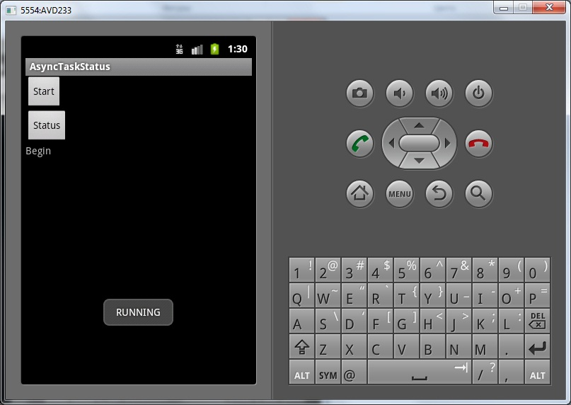
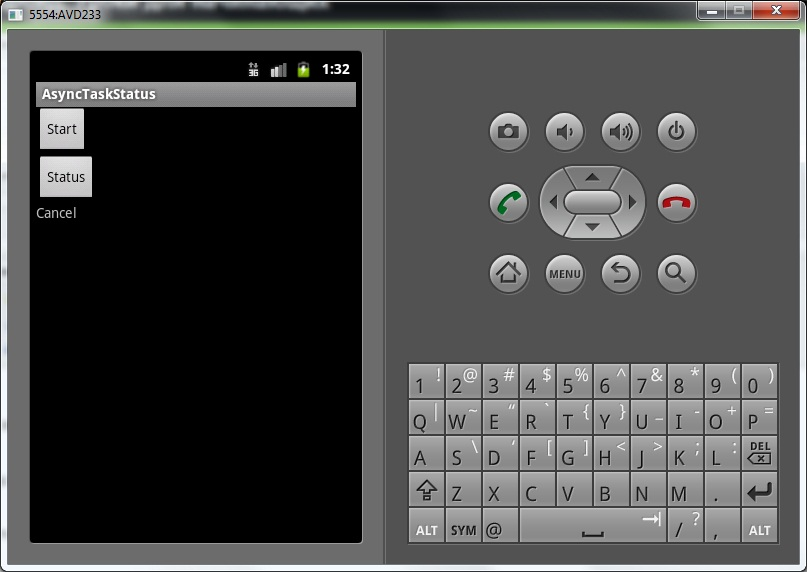
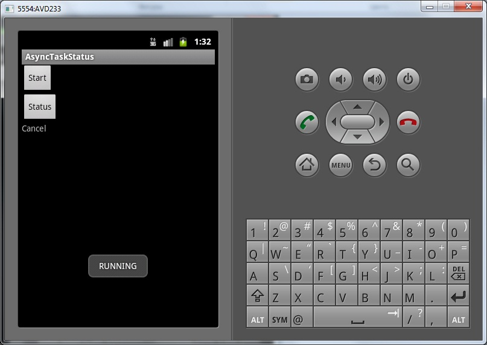
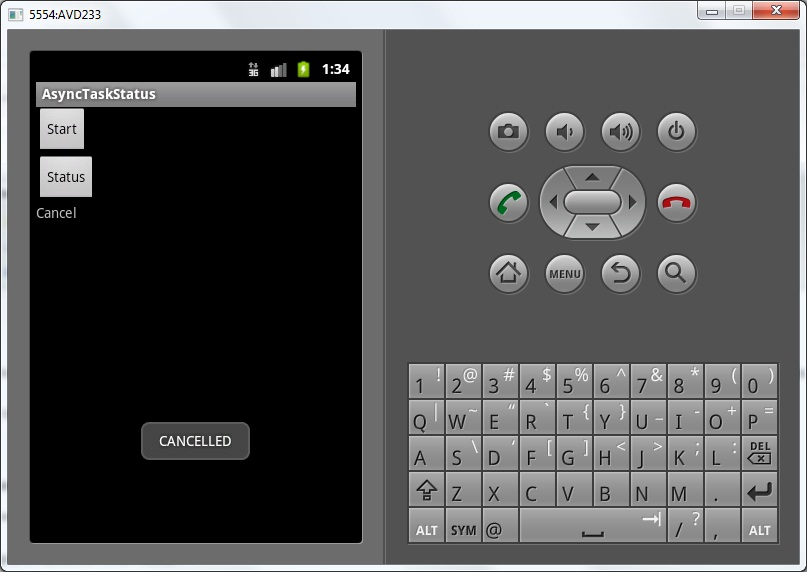

В этом уроке:
- читаем статусы задачи
Мы всегда можем определить, в каком состоянии сейчас находится задача. Для этого используются статусы. Их всего три:
PENDING – задача еще не запущена
RUNNING – задача в работе
FINISHED – метод onPostExecute отработал, т.е. задача успешно завершена
В принципе по названиям все понятно, но посмотрим и убедимся сами. К тому же, не очень понятно, в каком статусе будет задача, если мы ее отменим методом cancel.
Рассмотрим на примере.
Создадим проект:
Project name: P0901_AsyncTaskStatus
Build Target: Android 4.0
Application name: AsyncTaskStatus
Package name: ru.startandroid.develop.p0901asynctaskstatus
Create Activity: MainActivity
strings.xml:
<?xml version="1.0" encoding="utf-8"?>
<resources>
<string name="app_name">AsyncTaskStatus</string>
<string name="start">Start</string>
<string name="status">Status</string>
</resources>main.xml:
<?xml version="1.0" encoding="utf-8"?>
<LinearLayout
xmlns:android="http://schemas.android.com/apk/res/android"
android:layout_width="fill_parent"
android:layout_height="fill_parent"
android:orientation="vertical">
<Button
android:id="@+id/btnStart"
android:layout_width="wrap_content"
android:layout_height="wrap_content"
android:onClick="onclick"
android:text="@string/start">
</Button>
<Button
android:id="@+id/btnStatus"
android:layout_width="wrap_content"
android:layout_height="wrap_content"
android:onClick="onclick"
android:text="@string/status">
</Button>
<TextView
android:id="@+id/tvInfo"
android:layout_width="wrap_content"
android:layout_height="wrap_content"
android:text="">
</TextView>
</LinearLayout>По кнопке Start запускаем задачу, по кнопке Status будем выводить ее статус.
MainActivity.java:
package ru.startandroid.develop.p0901asynctaskstatus;
import java.util.concurrent.TimeUnit;
import android.app.Activity;
import android.os.AsyncTask;
import android.os.Bundle;
import android.view.View;
import android.widget.TextView;
import android.widget.Toast;
public class MainActivity extends Activity {
MyTask mt;
TextView tvInfo;
public void onCreate(Bundle savedInstanceState) {
super.onCreate(savedInstanceState);
setContentView(R.layout.main);
tvInfo = (TextView) findViewById(R.id.tvInfo);
}
public void onclick(View v) {
switch (v.getId()) {
case R.id.btnStart:
startTask();
break;
case R.id.btnStatus:
showStatus();
break;
default:
break;
}
}
private void startTask() {
mt = new MyTask();
}
private void showStatus() {
if (mt != null)
Toast.makeText(this, mt.getStatus().toString(), Toast.LENGTH_SHORT).show();
}
class MyTask extends AsyncTask<Void, Void, Void> {
@Override
protected void onPreExecute() {
super.onPreExecute();
tvInfo.setText("Begin");
}
@Override
protected Void doInBackground(Void... params) {
try {
for (int i = 0; i < 5; i++) {
if (isCancelled()) return null;
TimeUnit.SECONDS.sleep(1);
}
} catch (InterruptedException e) {
e.printStackTrace();
}
return null;
}
@Override
protected void onPostExecute(Void result) {
super.onPostExecute(result);
tvInfo.setText("End");
}
@Override
protected void onCancelled() {
super.onCancelled();
tvInfo.setText("Cancel");
}
}
}По нажатию кнопки Start срабатывает метод startTask. В нем мы просто создаем новую задачу, но пока что не запускаем ее.
По нажатию кнопки Status читаем и выводим на экран статус задачи. Используем метод getStatus.
Сама задача проста, гоняем в цикле паузы.
Все сохраним и запустим.

Жмем Start – задача создалась.
Жмем Status

Статус = PENDING. Все верно, задача еще не запущена.
Перепишем метод startTask:
private void startTask() {
mt = new MyTask();
mt.execute();
}Теперь будем создавать задачу и запускать ее.
Сохраняем, запускаем. Жмем Start. Задача начала работать.

Жмем Status, пока задача работает

Статус = RUNNING. Задача в работе.
После того, как задача завершилась (End на экране), жмем Status
Статус = FINISHED. Задача завершена успешно, метод onPostExecute был выполнен.
Теперь посмотрим, какой статус будет если отменить задачу. Перепишем startTask:
private void startTask() {
mt = new MyTask();
mt.execute();
mt.cancel(false);
}Недолго думая отменяем задачу сразу после запуска.
Сохраняем, запускаем приложение. Жмем Start.

Задача отменилась. Жмем Status

Статус почему-то RUNNING, как будто задача в работе. Не особо логично, конечно, но вот такая особенность реализации. Почему нельзя было ввести еще один статус CANCELED – я не знаю. Разработчикам Android виднее.
Как тогда отличить, задача запущена или отменена? Можно использовать метод isCancelled. Перепишем showStatus например так:
private void showStatus() {
if (mt != null)
if (mt.isCancelled())
Toast.makeText(this, "CANCELLED", Toast.LENGTH_SHORT).show();
else
Toast.makeText(this, mt.getStatus().toString(), Toast.LENGTH_SHORT).show();
}Сохраняем, запускаем приложение. Жмем Start, задача отменяется. Жмем Status

Задача отменена, значит isCancelled вернул true, и мы вывели соответствующее сообщение.